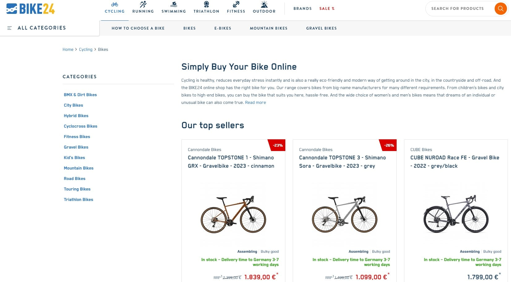

30 способів як заробити гроші в інтернеті у 2023 році
? Розкрийте свій фінансовий потенціал – скористайтеся прибутковими можливостями цифрового ландшафту. Інтернет – це скриня зі скарбами, переповнена можливостями заробити ? грошей і побудувати процвітаючий онлайн-бізнес. Скористайтеся своїм шансом отримати значний дохід, не виходячи з власної вітальні. У цьому огляді ви знайдете 30 унікальних способів отримання прибутку в Інтернеті, кожен з яких має свої переваги та підходить для різних ніш. Ви знайдете стратегії заробітку, що ідеально підходять для підприємців, інфлюенсерів, письменників, художників та технічних ентузіастів. що призведе до збільшення кількості конверсій і, в кінцевому підсумку, до збільшення прибутку. У всесвіті онлайн-бізнесу мова йде не про пошук можливостей, а про їх створення. Підживлюйте свої амбіції, використовуйте цю тактику і спостерігайте за тим, як примножуються ваші статки. Засукайте рукава – прийшов час заробляти гроші в Інтернеті! Приєднуйтесь до партнерської програми Plerdy Приєднуйтесь до партнерської програми Plerdy і розблокуйте потенціал для значного збільшення вашого заробітку в Інтернеті. Plerdy, зручне у використанні програмне забезпечення, яке оцінили понад 200 клієнтів на G2, надає можливість заробляти приємні 50% комісійних від кожного успішного реферала. Це чудова можливість для тих, хто прагне заробляти гроші на своєму веб-сайті або онлайн-бізнесі. Ось як це працює: Зареєструйтеся та приєднайтеся до вигідної партнерської програми Plerdy. Використовуйте своє унікальне реферальне посилання, щоб представити Plerdy своїй мережі. За кожен успішний продаж від ваших рефералів ви отримуєте 50% комісійних. Що робить Plerdy привабливим рефералом для вашої мережі? Це не просто платформа – вона має багато відгуків, проста у використанні і посідає третє місце за кількістю теплових карт на G2. Plerdy навіть пропонує вичерпні навчальні відео, які допоможуть користувачам максимізувати її цінність. Щоб спростити процес залучення рефералів, Plerdy пропонує набір готових до використання маркетингових активів. До них відносяться привабливі банери, які ідеально підходять для привернення уваги. Як ви можете максимізувати свій заробіток? Розмістіть своє унікальне реферальне посилання в різних місцях, наприклад, у вашому профіл background-repeat: repeat-x;
Занурення у світ заробітку в Інтернеті
Навігація в цифровій сфері для створення потоку доходу – це шлях, який стає все більш протоптаним. Існують різні шляхи, що охоплюють послуги фрілансерів, онлайн-курси та партнерський маркетинг. Пропонуючи гнучкість, ці стратегії дозволяють отримувати дохід незалежно від місцезнаходження та узгоджувати його з індивідуальним графіком і цілями.
Фріланс: Шлях адаптивності
Однією з найпоширеніших форм роботи в Інтернеті є фріланс, що пропонує свободу і гнучкість, непорівнянну з традиційною роботою. Платформи для фрілансерів, такі як Upwork, Freelancer і Fiverr, є чудовим порталом для бізнесу, який шукає послуги – від створення контенту і графічного дизайну до програмування та інтернет-маркетингу. Ви можете реалізовувати міжнародні проекти, маючи сильне портфоліо і хорошу репутацію, а також отримувати гроші. 30 способів як заробити гроші в інтернеті у 2023 році Категорії Бізнес Автор записуВід Andrew Chornyy Дата запису24 серпня 2023 Немає Коментарівдо 30 способів як заробити гроші в інтернеті у 2023 році ? Розкрийте свій фінансовий потенціал – скористайтеся прибутковими можливостями цифрового ландшафту. Інтернет – це скриня зі скарбами, переповнена можливостями заробити ? грошей і побудувати процвітаючий онлайн-бізнес. Скористайтеся своїм шансом отримати значний дохід, не виходячи з власної вітальні. У цьому огляді ви знайдете 30 унікальних способів отримання прибутку в Інтернеті, кожен з яких має свої переваги та підходить для різних ніш. Ви знайдете стратегії заробітку, що ідеально підходять для підприємців, інфлюенсерів, письменників, художників та технічних ентузіастів. ? Продаж цифрових продуктів (інструментів) на веб-сайті. ? Надання консультаційних послуг у вашій сфері. ? Написання цікавих постів у блозі та монетизація за допомогою реклами. ? Створення бізнесу електронної комерції та продаж фізичних товарів. Дозвольте Plerdy, інноваційному інструменту для оптимізації коефіцієнта конверсії (CRO) та користувацького досвіду (UX), стати вашим провідником у цій подорожі. За допомогою Plerdy ви можете оптимізувати свій веб-сайт для максимального залучення користувачів,
Ділитися знаннями через онлайн-курси
Незалежно від місцезнаходження та узгоджувати його з індивідуальним графіком і цілями. Фріланс: Шлях адаптивності Однією з найпоширеніших форм роботи в Інтернеті є фріланс, що пропонує свободу і гнучкість, непорівнянну з традиційною роботою. Платформи для фрілансерів, такі як Upwork, Freelancer і Fiverr, є чудовим порталом для бізнесу, який шукає послуги – від створення контенту і графічного дизайну до програмування та інтернет-маркетингу. Ви можете реалізовувати міжнародні проекти, маючи сильне портфоліо і хорошу репутацію, а також отримувати гроші. Ділитися знаннями через онлайн-курси Сила знань у цій ситуації – це прибуток. Такі сайти, як Udemy або Coursera, дозволяють експертам ділитися своїми знаннями та заробляти гроші за допомогою онлайн-курсів. Ще одним варіантом є особисте навчання, яке пропонує індивідуальний досвід навчання за допомогою таких платформ, як Skype або Zoom. Заробіток через партнерський маркетинг Партнерський маркетинг пропонує ще один прибутковий шлях. Ви можете заробляти комісію в розмірі 5% за кожну покупку, здійснену за вашим унікальним посиланням, схвалюючи продукти або інструменти на своєму веб-сайті або в соціальних мережах. Amazon Associates – одна з багатьох партнерських програм, що пропонують таку можливість заробітку. Як відрізнити справжній товар від шахрайського З розширенням можливостей заробітку в Інтернеті зростає і кількість шахрайств. Розпізнавання цих фальшивих можливостей має вирішальне значення для захисту вашого часу, зусиль і ресурсів. Пропозиції, які виходять за рамки віри Пропозиції, що обіцяють астрономічні прибутки з мінімальними зусиллями, часто виявляються шахрайством. Легальний заробіток в Інтернеті вимагає навичок, часу та іноді початкових інвестицій. Він не обіцяє миттєвого успіху або багатства. Вимоги передоплати До будь-якого сайту, який вимагає передоплату під виглядом високих прибутків, слід підходити з обережністю. Легальні платформи можуть стягувати номінальну плату або відсоток від вашого заробітку, але ніколи не вимагатимуть великих початкових платежів. Несправжні відгуки Шахрайські сайти часто розміщують сфабриковані відгуки з нереальними історіями успіху. Справжні відгуки відображатимуть різноманітний досвід, а не лише надзвичайне багатство чи миттєвий успіх. Брак прозорості Легальні компанії надають чітку, прозору інформацію про свою бізнес-модель, процес отримання доходу та пов’язані з ним витрати. Веб-сайти, які приховують або приховують цю інформацію, швидше за все, є шахрайськими. Відсутність контактної інформації Легальні підприємства надають чітку контактну інформацію. Якщо вона відсутня або якщо ви не можете зв’язатися з кимось за вказаними даними, це, швидше за все, шахрайський сайт. Для забезпечення успішного заробітку в Інтернеті необхідно розуміти основи і остерігатися шахрайства. Заробіток в Інтернеті вимагає відданості справі, навичок і вміння розпізнавати шахраїв. Підприємництво в онлайн-ритейлі Вихід на онлайн-ринок може призвести до золотого дна. Такі платформи, як eBay та Amazon, пропонують можливості для продажів, а запуск власного інтернет-магазину може дати вам повний контроль і більше грошей. Крім того, дропшиппінг дозволяє продавати без тягаря управління запасами. Отримання прибутку через eBay та Amazon Подумайте про захаращеність вашого горища або невикористовувані гаджети – eBay дозволяє перетворити їх на гроші. Платформа дозволяє продавати найрізноманітніші товари – від вінтажних коміксів до електроніки. Аналогічно, Amazon надає широку аудиторію, дозволяючи продавати будь-що – від виробів ручної роботи до книг. Використовуючи ці платформи, ви можете долучитися до вже існуючих ринків і отримати доступ до мільйонів потенційних клієнтів. Однак кожна платформа бере невелику комісію з ваших продажів. Використання можливостей персональних інтернет-магазинів Власний інтернет-магазин – це все одно, що володіти власною цифровою нерухомістю. Це дозволяє повністю контролювати все – від вибору товарів до обслуговування клієнтів і фірмового стилю бренду. Використання таких платформ, як Shopify або WooCommerce, може допомогти вам легко налаштувати свій інтернет-магазин. Наприклад, якщо ви любите домашні свічки, ваш магазин може задовольнити нішевий ринок, пропонуючи унікальні аромати або екологічно чисті варіанти. Маючи повний контроль над брендингом і маркетингом, ви можете зробити свій інтернет-магазин улюбленим місцем для любителів свічок. 30 способів як заробити гроші в інтернеті у 2023 році Категорії Бізнес Автор записуВід Andrew Chornyy Дата запису24 серпня 2023 Немає Коментарівдо 30 способів як заробити гроші в інтернеті у 2023 році ? Розкрийте свій фінансовий потенціал – скористайтеся прибутковими можливостями цифрового ландшафту. Інтернет – це скриня зі скарбами, переповнена можливостями заробити ? грошей і побудувати процвітаючий онлайн-бізнес. Скористайтеся своїм шансом отримати значний дохід, не виходячи з власної вітальні. У цьому огляді ви знайдете 30 унікальних способів отримання прибутку в Інтернеті, кожен з яких має свої переваги та підходить для різних ніш. Ви знайдете стратегії заробітку, що ідеально підходять для підприємців, інфлюенсерів, письменників, художників та технічних ентузіастів. ? Продаж цифрових продуктів (інструментів) на веб-сайті. ? Надання консультаційних послуг у вашій сфері. ? Написання цікавих постів у блозі та монетизація за допомогою реклами. ? Створення бізнесу електронної комерції та продаж фізичних товарів. Дозвольте Plerdy, інноваційному інструменту для оптимізації коефіцієнта конверсії (CRO) та користувацького досвіду (UX), стати вашим провідником у цій подорожі. За допомогою Plerdy ви можете оптимізувати свій веб-сайт для максимального залучення користувачів, що призведе до збільшення кількості конверсій і, в кінцевому підсумку, до збільшення прибутку. У всесвіті онлайн-бізнесу мова йде не про пошук можливостей, а про їх створення. Підживлюйте свої амбіції, використовуйте цю тактику і спостерігайте за тим, як примножуються ваші статки. Засукайте рукава – прийшов час заробляти гроші в Інтернеті! Приєднуйтесь до партнерської програми Plerdy Приєднуйтесь до партнерської програми Plerdy і розблокуйте потенціал для значного збільшення вашого заробітку в Інтернеті. Plerdy, зручне у використанні програмне забезпечення, яке оцінили понад 200 клієнтів на G2, надає можливість заробляти приємні 50% комісійних від кожного успішного реферала. Це чудова можливість для тих, хто прагне заробляти гроші на своєму веб-сайті або онлайн-бізнесі. Ось як це працює: Зареєструйтеся та приєднайтеся до вигідної партнерської програми Plerdy. Використовуйте своє унікальне реферальне посилання, щоб представити Plerdy своїй мережі. За кожен успішний продаж від ваших рефералів ви отримуєте 50% комісійних. Що робить Plerdy привабливим рефералом для вашої мережі? Це не просто платформа – вона має багато відгуків, проста у використанні і посідає третє місце за кількістю теплових карт на G2. Plerdy навіть пропонує вичерпні навчальні відео, які допоможуть користувачам максимізувати її цінність. Щоб спростити процес залучення рефералів, Plerdy пропонує набір готових до використання маркетингових активів. До них відносяться привабливі банери, які ідеально підходять для привернення уваги. Як ви можете максимізувати свій заробіток? Розмістіть своє унікальне реферальне посилання в різних місцях, наприклад, у вашому профілі фрілансера на таких платформах, як Upwork або Fiverr, у відповідних статтях блогу, у підписі електронної пошти або навіть як додатковий інструмент, який ви пропонуєте клієнтам вашого агентства. Пам’ятайте, що головне – поділитися своїм посиланням з відповідною аудиторією. Приєднавшись до партнерської програми Plerdy, ви маєте можливість трансформувати свій заробіток в Інтернеті. При середній ціні покупки в $100, ви можете заробити $50 за кожного успішного реферала. Уявіть, що ви привели 100 клієнтів – це колосальні $5,000 у вашій кишені! Почніть ділитися Plerdy вже сьогодні і розкрийте свій фінансовий потенціал! Занурення у світ заробітку в Інтернеті Навігація в цифровій сфері для створення потоку доходу – це шлях, який стає все більш протоптаним. Існують різні шляхи, що охоплюють послуги фрілансерів, онлайн-курси та партнерський маркетинг. Пропонуючи гнучкість, ці стратегії дозволяють отримувати дохід незалежно від місцезнаходження та узгоджувати його з індивідуальним графіком і цілями. Фріланс: Шлях адаптивності Однією з найпоширеніших форм роботи в Інтернеті є фріланс, що пропонує свободу і гнучкість, непорівнянну з традиційною роботою. Платформи для фрілансерів, такі як Upwork, Freelancer і Fiverr, є чудовим порталом для бізнесу, який шукає послуги – від створення контенту і графічного дизайну до програмування та інтернет-маркетингу. Ви можете реалізовувати міжнародні проекти, маючи сильне портфоліо і хорошу репутацію, а також отримувати гроші. Ділитися знаннями через онлайн-курси Сила знань у цій ситуації – це прибуток. Такі сайти, як Udemy або Coursera, дозволяють експертам ділитися своїми знаннями та заробляти гроші за допомогою онлайн-курсів. Ще одним варіантом є особисте навчання, яке пропонує індивідуальний досвід навчання за допомогою таких платформ, як Skype або Zoom. Заробіток через партнерський маркетинг Партнерський маркетинг пропонує ще один прибутковий шлях. Ви можете заробляти комісію в розмірі 5% за кожну покупку, здійснену за вашим унікальним посиланням, схвалюючи продукти або інструменти на своєму веб-сайті або в соціальних мережах. Amazon Associates – одна з багатьох партнерських програм, що пропонують таку можливість заробітку. Як відрізнити справжній товар від шахрайського З розширенням можливостей заробітку в Інтернеті зростає і кількість шахрайств. Розпізнавання цих фальшивих можливостей має вирішальне значення для захисту вашого часу, зусиль і ресурсів. Пропозиції, які виходять за рамки віри Пропозиції, що обіцяють астрономічні прибутки з мінімальними зусиллями, часто виявляються шахрайством. Легальний заробіток в Інтернеті вимагає навичок, часу та іноді початкових інвестицій. Він не обіцяє миттєвого успіху або багатства. Вимоги передоплати До будь-якого сайту, який вимагає передоплату під виглядом високих прибутків, слід підходити з обережністю. Легальні платформи можуть стягувати номінальну плату або відсоток від вашого заробітку, але ніколи не вимагатимуть великих початкових платежів. Несправжні відгуки Шахрайські сайти часто розміщують сфабриковані відгуки з нереальними історіями успіху. Справжні відгуки відображатимуть різноманітний досвід, а не лише надзвичайне багатство чи миттєвий успіх. Брак прозорості Легальні компанії надають чітку, прозору інформацію про свою бізнес-модель, процес отримання доходу та пов’язані з ним витрати. Веб-сайти, які приховують або приховують цю інформацію, швидше за все, є шахрайськими. Відсутність контактної інформації Легальні підприємства надають чітку контактну інформацію. Якщо вона відсутня або якщо ви не можете зв’язатися з кимось за вказаними даними, це, швидше за все, шахрайський сайт. Для забезпечення успішного заробітку в Інтернеті необхідно розуміти основи і остерігатися шахрайства. Заробіток в Інтернеті вимагає відданості справі, навичок і вміння розпізнавати шахраїв. Підприємництво в онлайн-ритейлі Вихід на онлайн-ринок може призвести до золотого дна. Такі платформи, як eBay та Amazon, пропонують можливості для продажів, а запуск власного інтернет-магазину може дати вам повний контроль і більше грошей. Крім того, дропшиппінг дозволяє продавати без тягаря управління запасами. Отримання прибутку через eBay та Amazon Подумайте про захаращеність вашого горища або невикористовувані гаджети – eBay дозволяє перетворити їх на гроші. Платформа дозволяє продавати найрізноманітніші товари – від вінтажних коміксів до електроніки. Аналогічно, Amazon надає широку аудиторію, дозволяючи продавати будь-що – від виробів ручної роботи до книг. Використовуючи ці платформи, ви можете долучитися до вже існуючих ринків і отримати доступ до мільйонів потенційних клієнтів. Однак кожна платформа бере невелику комісію з ваших продажів. Використання можливостей персональних інтернет-магазинів Власний інтернет-магазин – це все одно, що володіти власною цифровою нерухомістю. Це дозволяє повністю контролювати все – від вибору товарів до обслуговування клієнтів і фірмового стилю бренду. Використання таких платформ, як Shopify або WooCommerce, може допомогти вам легко налаштувати свій інтернет-магазин. Наприклад, якщо ви любите домашні свічки, ваш магазин може задовольнити нішевий ринок, пропонуючи унікальні аромати або екологічно чисті варіанти. Маючи повний контроль над брендингом і маркетингом, ви можете зробити свій інтернет-магазин улюбленим місцем для любителів свічок. 30 способів як заробити гроші в інтернеті у 2023 році Категорії Бізнес Автор записуВід Andrew Chornyy Дата запису24 серпня 2023 Немає Коментарівдо 30 способів як заробити гроші в інтернеті у 2023 році ? Розкрийте свій фінансовий потенціал – скористайтеся прибутковими можливостями цифрового ландшафту. Інтернет – це скриня зі скарбами, переповнена можливостями заробити ? грошей і побудувати процвітаючий онлайн-бізнес. Скористайтеся своїм шансом отримати значний дохід, не виходячи з власної вітальні. У цьому огляді ви знайдете 30 унікальних способів отримання прибутку в Інтернеті, кожен з яких має свої переваги та підходить для різних ніш. Ви знайдете стратегії заробітку, що ідеально підходять для підприємців, інфлюенсерів, письменників, художників та технічних ентузіастів. ? Продаж цифрових продуктів (інструментів) на веб-сайті. ? Надання консультаційних послуг у вашій сфері. ? Написання цікавих постів у блозі та монетизація за допомогою реклами. ? Створення бізнесу електронної комерції та продаж фізичних товарів. Дозвольте Plerdy, інноваційному інструменту для оптимізації коефіцієнта конверсії (CRO) та користувацького досвіду (UX), стати вашим провідником у цій подорожі. За допомогою Plerdy ви можете оптимізувати свій веб-сайт для максимального залучення користувачів, що призведе до збільшення кількості конверсій і, в кінцевому підсумку, до збільшення прибутку. У всесвіті онлайн-бізнесу мова йде не про пошук можливостей, а про їх створення. Підживлюйте свої амбіції, використовуйте цю тактику і спостерігайте за тим, як примножуються ваші статки. Засукайте рукава – прийшов час заробляти гроші в Інтернеті! Приєднуйтесь до партнерської програми Plerdy Приєднуйтесь до партнерської програми Plerdy і розблокуйте потенціал для значного збільшення вашого заробітку в Інтернеті. Plerdy, зручне у використанні програмне забезпечення, яке оцінили понад 200 клієнтів на G2, надає можливість заробляти приємні 50% комісійних від кожного успішного реферала. Це чудова можливість для тих, хто прагне заробляти гроші на своєму веб-сайті або онлайн-бізнесі. Ось як це працює: Зареєструйтеся та приєднайтеся до вигідної партнерської програми Plerdy. Використовуйте своє унікальне реферальне посилання, щоб представити Plerdy своїй мережі. За кожен успішний продаж від ваших рефералів ви отримуєте 50% комісійних. Що робить Plerdy привабливим рефералом для вашої мережі? Це не просто платформа – вона має багато відгуків, проста у використанні і посідає третє місце за кількістю теплових карт на G2. Plerdy навіть пропонує вичерпні навчальні відео, які допоможуть користувачам максимізувати її цінність. Щоб спростити процес залучення рефералів, Plerdy пропонує набір готових до використання маркетингових активів. До них відносяться привабливі банери, які ідеально підходять для привернення уваги. Як ви можете максимізувати свій заробіток? Розмістіть своє унікальне реферальне
Заробіток через партнерський маркетинг
Партнерський маркетинг пропонує ще один прибутковий шлях. Ви можете заробляти комісію в розмірі 5% за кожну покупку, здійснену за вашим унікальним посиланням, схвалюючи продукти або інструменти на своєму веб-сайті або в соціальних мережах. Amazon Associates – одна з багатьох партнерських програм, що пропонують таку можливість заробітку. посилання в різних місцях, наприклад, у вашому профілі фрілансера на таких платформах, як Upwork або Fiverr, у відповідних статтях блогу, у підписі електронної пошти або навіть як додатковий інструмент, який ви пропонуєте клієнтам вашого агентства. Пам’ятайте, що головне – поділитися своїм посиланням з відповідною аудиторією. Приєднавшись до партнерської програми Plerdy, ви маєте можливість трансформувати свій заробіток в Інтернеті. При середній ціні покупки в $100, ви можете заробити $50 за кожного успішного реферала. Уявіть, що ви привели 100 клієнтів – це колосальні $5,000 у вашій кишені! Почніть ділитися Plerdy вже сьогодні і розкрийте свій фінансовий потенціал! Занурення у світ заробітку в Інтернеті Навігація в цифровій сфері для створення потоку доходу – це шлях, який стає все більш протоптаним. Існують різні шляхи, що охоплюють послуги фрілансерів, онлайн-курси та партнерський маркетинг. Пропонуючи гнучкість, ці стратегії дозволяють отримувати дохід незалежно від місцезнаходження та узгоджувати його з індивідуальним графіком і цілями. Фріланс: Шлях адаптивності Однією з найпоширеніших форм роботи в Інтернеті є фріланс, що пропонує свободу і гнучкість, непорівнянну з традиційною роботою. Платформи для фрілансерів, такі як Upwork, Freelancer і Fiverr, є чудовим порталом для бізнесу, який шукає послуги – від створення контенту і графічного дизайну до програмування та інтернет-маркетингу. Ви можете реалізовувати міжнародні проекти, маючи сильне портфоліо і хорошу репутацію, а також отримувати гроші. Ділитися знаннями через онлайн-курси Сила знань у цій ситуації – це прибуток. Такі сайти, як Udemy або Coursera, дозволяють експертам ділитися своїми знаннями та заробляти гроші за допомогою онлайн-курсів. Ще одним варіантом є особисте навчання, яке пропонує індивідуальний досвід навчання за допомогою таких платформ, як Skype або Zoom. Заробіток через партнерський маркетинг Партнерський маркетинг пропонує ще один прибутковий шлях. Ви можете заробляти комісію в розмірі 5% за кожну покупку, здійснену за вашим унікальним посиланням, схвалюючи продукти або інструменти на своєму веб-сайті або в соціальних мережах. Amazon Associates – одна з багатьох партнерських програм, що пропонують таку можливість заробітку. Як відрізнити справжній товар від шахрайського З розширенням можливостей заробітку в Інтернеті зростає і кількість шахрайств. Розпізнавання цих фальшивих можливостей має вирішальне значення для захисту вашого часу, зусиль і ресурсів. Пропозиції, які виходять за рамки віри Пропозиції, що обіцяють астрономічні прибутки з мінімальними зусиллями, часто виявляються шахрайством. Легальний заробіток в Інтернеті вимагає навичок, часу та іноді початкових інвестицій. Він не обіцяє миттєвого успіху або багатства. Вимоги передоплати До будь-якого сайту, який вимагає передоплату під виглядом високих прибутків, слід підходити з обережністю. Легальні платформи можуть стягувати номінальну плату або відсоток від вашого заробітку, але ніколи не вимагатимуть великих початкових платежів. Несправжні відгуки Шахрайські сайти часто розміщують сфабриковані відгуки з нереальними історіями успіху. Справжні відгуки відображатимуть різноманітний досвід, а не лише надзвичайне багатство чи миттєвий успіх. Брак прозорості Легальні компанії надають чітку, прозору інформацію про свою бізнес-модель, процес отримання доходу та пов’язані з ним витрати. Веб-сайти, які приховують або приховують цю інформацію, швидше за все, є шахрайськими. Відсутність контактної інформації Легальні підприємства надають чітку контактну інформацію. Якщо вона відсутня або якщо ви не можете зв’язатися з кимось за вказаними даними, це, швидше за все, шахрайський сайт. Для забезпечення успішного заробітку в Інтернеті необхідно розуміти основи і остерігатися шахрайства. Заробіток в Інтернеті вимагає відданості справі, навичок і вміння розпізнавати шахраїв. Підприємництво в онлайн-ритейлі Вихід на онлайн-ринок може призвести до золотого дна. Такі платформи, як eBay та Amazon, пропонують можливості для продажів, а запуск власного інтернет-магазину може дати вам повний контроль і більше грошей. Крім того, дропшиппінг дозволяє продавати без тягаря управління запасами. Отримання прибутку через eBay та Amazon Подумайте про захаращеність вашого горища або невикористовувані гаджети – eBay дозволяє перетворити їх на гроші. Платформа дозволяє продавати найрізноманітніші товари – від вінтажних коміксів до електроніки. Аналогічно, Amazon надає широку аудиторію, дозволяючи продавати будь-що – від виробів ручної роботи до книг. Використовуючи ці платформи, ви можете долучитися до вже існуючих ринків і отримати доступ до мільйонів потенційних клієнтів. Однак кожна платформа бере невелику комісію з ваших продажів. Використання можливостей персональних інтернет-магазинів Власний інтернет-магазин – це все одно, що володіти власною цифровою нерухомістю. Це дозволяє повністю контролювати все – від вибору товарів до обслуговування клієнтів і фірмового стилю бренду. Використання таких платформ, як Shopify або WooCommerce, може допомогти вам легко налаштувати свій інтернет-магазин. Наприклад, якщо ви любите домашні свічки, ваш магазин може задовольнити нішевий ринок, пропонуючи унікальні аромати або екологічно чисті варіанти. Маючи повний контроль над брендингом і маркетингом, ви можете зробити свій інтернет-магазин улюбленим місцем для любителів свічок. Сила знань у цій ситуації – це прибуток. Такі сайти, як Udemy або Coursera, дозволяють експертам ділитися своїми знаннями та заробляти гроші за допомогою онлайн-курсів. Ще одним варіантом є особисте навчання, яке пропонує індивідуальний досвід навчання за допомогою таких платформ, як Skype або Zoom.
Як відрізнити справжній товар від шахрайського
що призведе до збільшення кількості конверсій і, в кінцевому підсумку, до збільшення прибутку. У всесвіті онлайн-бізнесу мова йде не про пошук можливостей, а про їх створення. Підживлюйте свої амбіції, використовуйте цю тактику і спостерігайте за тим, як примножуються ваші статки. Засукайте рукава – прийшов час заробляти гроші в Інтернеті! Приєднуйтесь до партнерської програми Plerdy Приєднуйтесь до партнерської програми Plerdy і розблокуйте потенціал для значного збільшення вашого заробітку в Інтернеті. Plerdy, зручне у використанні програмне забезпечення, яке оцінили понад 200 клієнтів на G2, надає можливість заробляти приємні 50% комісійних від кожного успішного реферала. Це чудова можливість для тих, хто прагне заробляти гроші на своєму веб-сайті або онлайн-бізнесі. Ось як це працює: Зареєструйтеся та приєднайтеся до вигідної партнерської програми Plerdy. Використовуйте своє унікальне реферальне посилання, щоб представити Plerdy своїй мережі. За кожен успішний продаж від ваших рефералів ви отримуєте 50% комісійних. Що робить Plerdy привабливим рефералом для вашої мережі? Це не просто платформа – вона має багато відгуків, проста у використанні і посідає третє місце за кількістю теплових карт на G2. Plerdy навіть пропонує вичерпні навчальні відео, які допоможуть користувачам максимізувати її цінність. Щоб спростити процес залучення рефералів, Plerdy пропонує набір готових до використання маркетингових активів. До них відносяться привабливі банери, які ідеально підходять для привернення уваги. Як ви можете максимізувати свій заробіток? Розмістіть своє унікальне реферальне посилання в різних місцях, наприклад, у вашому профіл background-repeat: repeat-x; З розширенням можливостей заробітку в Інтернеті зростає і кількість шахрайств. Розпізнавання цих фальшивих можливостей має вирішальне значення для захисту вашого часу, зусиль і ресурсів. що призведе до збільшення кількості конверсій і, в кінцевому підсумку, до збільшення прибутку. У всесвіті онлайн-бізнесу мова йде не про пошук можливостей, а про їх створення. Підживлюйте свої амбіції, використовуйте цю тактику і спостерігайте за тим, як примножуються ваші статки. Засукайте рукава – прийшов час заробляти гроші в Інтернеті! Приєднуйтесь до партнерської програми Plerdy Приєднуйтесь до партнерської програми Plerdy і розблокуйте потенціал для значного збільшення вашого заробітку в Інтернеті. Plerdy, зручне у використанні програмне забезпечення, яке оцінили понад 200 клієнтів на G2, надає можливість заробляти приємні 50% комісійних від кожного успішного реферала. Це чудова можливість для тих, хто прагне заробляти гроші на своєму веб-сайті або онлайн-бізнесі. Ось як це працює: Зареєструйтеся та приєднайтеся до вигідної партнерської програми Plerdy. Використовуйте своє унікальне реферальне посилання, щоб представити Plerdy своїй мережі. За кожен успішний продаж від ваших рефералів ви отримуєте 50% комісійних. Що робить Plerdy привабливим рефералом для вашої мережі? Це не просто платформа – вона має багато відгуків, проста у використанні і посідає третє місце за кількістю теплових карт на G2. Plerdy навіть пропонує вичерпні навчальні відео, які допоможуть користувачам максимізувати її цінність. Щоб спростити процес залучення рефералів, Plerdy пропонує набір готових до використання маркетингових активів. До них відносяться привабливі банери, які ідеально підходять для привернення уваги. Як ви можете максимізувати свій заробіток? Розмістіть своє унікальне реферальне посилання в різних місцях, наприклад, у вашому профіл background-repeat: repeat-x; З розширенням можливостей заробітку в Інтернеті зростає і кількість шахрайств. Розпізнавання цих фальшивих можливостей має вирішальне значення для захисту вашого часу, зусиль і ресурсів.
Пропозиції, які виходять за рамки віри
Пропозиції, що обіцяють астрономічні прибутки з мінімальними зусиллями, часто виявляються шахрайством. Легальний заробіток в Інтернеті вимагає навичок, часу та іноді початкових інвестицій. Він не обіцяє миттєвого успіху або багатства. Пропозиції, що обіцяють астрономічні прибутки з мінімальними зусиллями, часто виявляються шахрайством. Легальний заробіток в Інтернеті вимагає навичок, часу та іноді початкових інвестицій. Він не обіцяє миттєвого успіху або багатства. Пропозиції, що обіцяють астрономічні прибутки з мінімальними зусиллями, часто виявляються шахрайством. Легальний заробіток в Інтернеті вимагає навичок, часу та іноді початкових інвестицій. Він не обіцяє миттєвого успіху або багатства. Пропозиції, що обіцяють астрономічні прибутки з мінімальними зусиллями, часто виявляються шахрайством. Легальний заробіток в Інтернеті вимагає навичок, часу та іноді початкових інвестицій. Він не обіцяє миттєвого успіху або багатства. Пропозиції, що обіцяють астрономічні прибутки з мінімальними зусиллями, часто виявляються шахрайством. Легальний заробіток в Інтернеті вимагає навичок, часу та іноді початкових інвестицій. Він не обіцяє миттєвого успіху або багатства.
Вимоги передоплати
До будь-якого сайту, який вимагає передоплату під виглядом високих прибутків, слід підходити з обережністю. Легальні платформи можуть стягувати номінальну плату або відсоток від вашого заробітку, але ніколи не вимагатимуть великих початкових платежів. До будь-якого сайту, який вимагає передоплату під виглядом високих прибутків, слід підходити з обережністю. Легальні платформи можуть стягувати номінальну плату або відсоток від вашого заробітку, але ніколи не вимагатимуть великих початкових платежів. До будь-якого сайту, який вимагає передоплату під виглядом високих прибутків, слід підходити з обережністю. Легальні платформи можуть стягувати номінальну плату або відсоток від вашого заробітку, але ніколи не вимагатимуть великих початкових платежів. До будь-якого сайту, який вимагає передоплату під виглядом високих прибутків, слід підходити з обережністю. Легальні платформи можуть стягувати номінальну плату або відсоток від вашого заробітку, але ніколи не вимагатимуть великих початкових платежів. До будь-якого сайту, який вимагає передоплату під виглядом високих прибутків, слід підходити з обережністю. Легальні платформи можуть стягувати номінальну плату або відсоток від вашого заробітку, але ніколи не вимагатимуть великих початкових платежів. До будь-якого сайту, який вимагає передоплату під виглядом високих прибутків, слід підходити з обережністю. Легальні платформи можуть стягувати номінальну плату або відсоток від вашого заробітку, але ніколи не вимагатимуть великих початкових платежів. До будь-якого сайту, який вимагає передоплату під виглядом високих прибутків, слід підходити з обережністю. Легальні платформи можуть стягувати номінальну плату або відсоток від вашого заробітку, але ніколи не вимагатимуть великих початкових платежів.
Несправжні відгуки
Шахрайські сайти часто розміщують сфабриковані відгуки з нереальними історіями успіху. Справжні відгуки відображатимуть різноманітний досвід, а не лише надзвичайне багатство чи миттєвий успіх. Шахрайські сайти часто розміщують сфабриковані відгуки з нереальними історіями успіху. Справжні відгуки відображатимуть різноманітний досвід, а не лише надзвичайне багатство чи миттєвий успіх. Шахрайські сайти часто розміщують сфабриковані відгуки з нереальними історіями успіху. Справжні відгуки відображатимуть різноманітний досвід, а не лише надзвичайне багатство чи миттєвий успіх. Шахрайські сайти часто розміщують сфабриковані відгуки з нереальними історіями успіху. Справжні відгуки відображатимуть різноманітний досвід, а не лише надзвичайне багатство чи миттєвий успіх. Шахрайські сайти часто розміщують сфабриковані відгуки з нереальними історіями успіху. Справжні відгуки відображатимуть різноманітний досвід, а не лише надзвичайне багатство чи миттєвий успіх. Шахрайські сайти часто розміщують сфабриковані відгуки з нереальними історіями успіху. Справжні відгуки відображатимуть різноманітний досвід, а не лише надзвичайне багатство чи миттєвий успіх. Шахрайські сайти часто розміщують сфабриковані відгуки з нереальними історіями успіху. Справжні відгуки відображатимуть різноманітний досвід, а не лише надзвичайне багатство чи миттєвий успіх. Шахрайські сайти часто розміщують сфабриковані відгуки з нереальними історіями успіху. Справжні відгуки відображатимуть різноманітний досвід, а не лише надзвичайне багатство чи миттєвий успіх. Шахрайські сайти часто розміщують сфабриковані відгуки з нереальними історіями успіху. Справжні відгуки відображатимуть різноманітний досвід, а не лише надзвичайне багатство чи миттєвий успіх. Шахрайські сайти часто розміщують сфабриковані відгуки з нереальними історіями успіху. Справжні відгуки відображатимуть різноманітний досвід, а не лише надзвичайне багатство чи миттєвий успіх. Шахрайські сайти часто розміщують сфабриковані відгуки з нереальними історіями успіху. Справжні відгуки відображатимуть різноманітний досвід, а не лише надзвичайне багатство чи миттєвий успіх. Шахрайські сайти часто розміщують сфабриковані відгуки з нереальними історіями успіху. Справжні відгуки відображатимуть різноманітний досвід, а не лише надзвичайне багатство чи миттєвий успіх. Шахрайські сайти часто розміщують сфабриковані відгуки з нереальними історіями успіху. Справжні відгуки відображатимуть різноманітний досвід, а не лише надзвичайне багатство чи миттєвий успіх. Шахрайські сайти часто розміщують сфабриковані відгуки з нереальними історіями успіху. Справжні відгуки відображатимуть різноманітний досвід, а не лише надзвичайне багатство чи миттєвий успіх.
Брак прозорості
Легальні компанії надають чітку, прозору інформацію про свою бізнес-модель, процес отримання доходу та пов’язані з ним витрати. Веб-сайти, які приховують або приховують цю інформацію, швидше за все, є шахрайськими. Легальні компанії надають чітку, прозору інформацію про свою бізнес-модель, процес отримання доходу та пов’язані з ним витрати. Веб-сайти, які приховують або приховують цю інформацію, швидше за все, є шахрайськими. Легальні компанії надають чітку, прозору інформацію про свою бізнес-модель, процес отримання доходу та пов’язані з ним витрати. Веб-сайти, які приховують або приховують цю інформацію, швидше за все, є шахрайськими. Легальні компанії надають чітку, прозору інформацію про свою бізнес-модель, процес отримання доходу та пов’язані з ним витрати. Веб-сайти, які приховують або приховують цю інформацію, швидше за все, є шахрайськими. Легальні компанії надають чітку, прозору інформацію про свою бізнес-модель, процес отримання доходу та пов’язані з ним витрати. Веб-сайти, які приховують або приховують цю інформацію, швидше за все, є шахрайськими. Легальні компанії надають чітку, прозору інформацію про свою бізнес-модель, процес отримання доходу та пов’язані з ним витрати. Веб-сайти, які приховують або приховують цю інформацію, швидше за все, є шахрайськими. Легальні компанії надають чітку, прозору інформацію про свою бізнес-модель, процес отримання доходу та пов’язані з ним витрати. Веб-сайти, які приховують або приховують цю інформацію, швидше за все, є шахрайськими. Легальні компанії надають чітку, прозору інформацію про свою бізнес-модель, процес отримання доходу та пов’язані з ним витрати. Веб-сайти, які приховують або приховують цю інформацію, швидше за все, є шахрайськими. Легальні компанії надають чітку, прозору інформацію про свою бізнес-модель, процес отримання доходу та пов’язані з ним витрати. Веб-сайти, які приховують або приховують цю інформацію, швидше за все, є шахрайськими. Легальні компанії надають чітку, прозору інформацію про свою бізнес-модель, процес отримання доходу та пов’язані Легальні компанії надають чітку, прозору інформацію про свою бізнес-модель, процес отримання доходу та пов’язані з ним витрати. Веб-сайти, які приховують або приховують цю інформацію, швидше за все, є шахрайськими. Легальні компанії надають чітку, прозору інформацію про свою бізнес-модель, процес отримання доходу та пов’язані з ним витрати. Веб-сайти, які приховують або приховують цю інформацію, швидше за все, є шахрайськими. Легальні компанії надають чітку, прозору інформацію про свою бізнес-модель, процес отримання доходу та пов’язані з ним витрати. Веб-сайти, які приховують або приховують цю інформацію, швидше за все, є шахрайськими. Легальні компанії надають чітку, прозору інформацію про свою бізнес-модель, процес отримання доходу та пов’язані з ним витрати. Веб-сайти, які приховують або приховують цю інформацію, швидше за все, є шахрайськими. Легальні компанії надають чітку, прозору інформацію про свою бізнес-модель, процес отримання доходу та пов’язані з ним витрати. Веб-сайти, які приховують або приховують цю інформацію, швидше за все, є шахрайськими. Легальні компанії надають чітку, прозору інформацію про свою бізнес-модель, процес отримання доходу та пов’язані з ним витрати. Веб-сайти, які приховують або приховують цю інформацію, швидше за все, є шахрайськими. Легальні компанії надають чітку, прозору інформацію про свою бізнес-модель, процес отримання доходу та пов’язані з ним витрати. Веб-сайти, які приховують або приховують цю інформацію, швидше за все, є шахрайськими. Легальні компанії надають чітку, прозору інформацію про свою бізнес-модель, процес отримання доходу та пов’язані з ним витрати. Веб-сайти, які приховують або приховують цю інформацію, швидше за все, є шахрайськими. Легальні компанії надають чітку, прозору інформацію про свою бізнес-модель, процес отримання доходу та пов’язані з ним витрати. Веб-сайти, які приховують або приховують цю інформацію, швидше за все, є шахрайськими. Легальні компанії надають чітку, прозору інформацію про свою бізнес-модель, процес отримання доходу та пов’язані Легальні компанії надають чітку, прозору інформацію про свою бізнес-модель, процес отримання доходу та пов’язані з ним витрати. Веб-сайти, які приховують або приховують цю інформацію, швидше за все, є шахрайськими. Легальні компанії надають чітку, прозору інформацію про свою бізнес-модель, процес отримання доходу та пов’язані з ним витрати. Веб-сайти, які приховують або приховують цю інформацію, швидше за все, є шахрайськими. Легальні компанії надають чітку, прозору інформацію про свою бізнес-модель, процес отримання доходу та пов’язані з ним витрати. Веб-сайти, які приховують або приховують цю інформацію, швидше за все, є шахрайськими. Легальні компанії надають чітку, прозору інформацію про свою бізнес-модель, процес отримання доходу та пов’язані з ним витрати. Веб-сайти, які приховують або приховують цю інформацію, швидше за все, є шахрайськими. Легальні компанії надають чітку, прозору інформацію про свою бізнес-модель, процес отримання доходу та пов’язані з ним витрати. Веб-сайти, які приховують або приховують цю інформацію, швидше за все, є шахрайськими. Легальні компанії надають чітку, прозору інформацію про свою бізнес-модель, процес отримання доходу та пов’язані з ним витрати. Веб-сайти, які приховують або приховують цю інформацію, швидше за все, є шахрайськими. Легальні компанії надають чітку, прозору інформацію про свою бізнес-модель, процес отримання доходу та пов’язані з ним витрати. Веб-сайти, які приховують або приховують цю інформацію, швидше за все, є шахрайськими. Легальні компанії надають чітку, прозору інформацію про свою бізнес-модель, процес отримання доходу та пов’язані з ним витрати. Веб-сайти, які приховують або приховують цю інформацію, швидше за все, є шахрайськими. Легальні компанії надають чітку, прозору інформацію про свою бізнес-модель, процес отримання доходу та пов’язані з ним витрати. Веб-сайти, які приховують або приховують цю інформацію, швидше за все, є шахрайськими. Легальні компанії надають чітку, прозору інформацію про свою бізнес-модель, процес отримання доходу та пов’язані з ним витрати. Веб-сайти, які приховують або приховують цю інформацію, швидше за все, є шахрайськими.